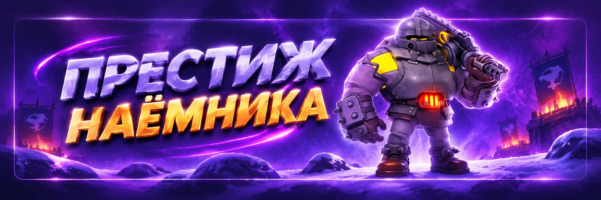

Престиж наёмника
Автор - Sova
«Престиж наёмника» - PvE-событие из двух частей: личной цепочки наёмников Фаэтона и совместных испытаний альянса против капитанов Фаэтона.
Главный ограниченный ресурс события - энергия губернатора. Поэтому задача не просто пройти все этапы, а сделать это с минимальным расходом энергии.
Как устроено событие
В личной части нужно последовательно победить 25 наёмников. Они становятся сильнее по мере прохождения.
Особенно заметный скачок сложности обычно приходится на этапы:
После личных испытаний участники помогают альянсу открывать совместных капитанов Фаэтона.
Выбор сложности
В начале события выбирается доступная сложность.
Если полностью пройти все 25 этапов, следующая сложность станет доступна при одном из следующих запусков события.
Не выбирайте максимальную сложность только из-за красивых наград. Главное - суметь закончить всю цепочку.
Как найти наёмника
Каждый этап начинается с разведки.
После неё наёмник появляется на карте на 1 час.
Если время закончится, найденная цель исчезнет и придётся снова потратить 15 энергии. Поэтому не запускайте разведку, если сейчас не готовы заниматься этапом.
Три способа победить
Дополнительно стоит 10 энергии. Самый дешёвый обычный вариант.
Дополнительно стоит 25 энергии. Используйте только когда одиночного марша действительно недостаточно.
Использует Контракт наёмника. Дополнительная энергия владельца за сам бой не требуется, но 15 энергии за разведку уже были потрачены.
Сколько энергии нужно
Если проходить все 25 этапов только одиночными атаками:
Если использовать 5 бесплатных запросов помощи:
Это намного выгоднее постоянных собственных рейдов.
Не открывайте рейд на каждый этап
Если пройти все 25 целей собственными рейдами:
Правильная последовательность:
Джина экономит энергию
Для обычных атак очень полезна Джина. Её навык снижает расход энергии на подходящие действия в тундре.
- Одиночная атака: 10 → 8 энергии при достаточной прокачке.
- Рейд: 25 → 20 энергии при достаточной прокачке.
Если использовать 5 запросов помощи и 20 одиночных атак с хорошо прокачанной Джиной, полное прохождение может обойтись примерно в 535 энергии.
Проиграли соло? Энергия вернётся
Поэтому сложного наёмника можно использовать как бесплатный тест состава, пока действует часовой таймер разведки.
Используйте поражение как тест
Если этап выглядит слишком сильным:
- Попробуйте лучшую тройку героев.
- Посмотрите результат.
- Замените одного героя.
- Переставьте снаряжение.
- Измените состав войск.
- Попробуйте снова.
Если он закончится, разведку придётся оплачивать повторно.
Когда перестать тестировать
Если после нескольких вариантов очевидно, что вы сильно слабее цели, не тратьте время. Используйте Контракт или открывайте рейд с союзниками.
Поражения могут не расходовать энергию атаки, но таймер найденного наёмника продолжает идти.
Контракты наёмника
В начале события игрок получает 5 Контрактов. Они позволяют использовать функцию «Запросить помощь».
После запроса информация о цели появляется для вашего альянса, и союзник может помочь закрыть этап.
Куда лучше тратить Контракты
Необязательно использовать их строго на этапах 5 / 10 / 15 / 20 / 25.
То есть Контракт особенно ценен там, где он экономит больше всего энергии.
Помогайте союзникам
Помощь другим участникам выгодна. За участие можно получать дополнительные предметы поддержки, Контракты и награды за помощь.
Событие становится намного выгоднее, когда участники активно помогают друг другу.
Не копите Контракты без цели
Контракты относятся к текущему событию. Если до окончания осталось мало времени, используйте их на оставшиеся сложные этапы. Нет смысла закончить событие с неиспользованными бесплатными запросами помощи.
Ускоренные марши события
В актуальной версии события марши к наёмникам получают дополнительное ускорение движения. Но всё равно учитывайте время пути, особенно если до окончания часового таймера осталось мало времени.
Альянсовая часть
Личное прохождение участников одновременно двигает прогресс всего альянса.
Сколько капитанов
В текущей цепочке:
Каждый следующий сильнее предыдущего. Альянс открывает их постепенно по мере общего прогресса участников.
На капитана даётся 30 минут
После вызова участники получают уведомление и начинается таймер.
Поэтому R4/R5 не должны запускать босса случайно.
Когда вызывать капитана
Лучшее время - когда в сети много участников.
- Предупредить альянс заранее.
- Указать время вызова.
- Дать игрокам вернуть марши.
- Убедиться, что большинство готово.
Капитана не бьют обычным рейдом
Механика отличается от Медведя или Полярного террора. Участники отправляют отдельные марши и постепенно уменьшают здоровье капитана.
Чем больше участников успеет ударить, тем больше игроков смогут получить награду за участие.
Сначала дайте всем отметиться
Так один сильный игрок не уничтожит босса раньше, чем остальные успеют принять участие.
Награда за участие
Главное - успеть принять участие. Размер вашего урона не является причиной специально пытаться перебить всех остальных.
Выгоднее дать возможность ударить как можно большему количеству участников.
Что если капитана не убили
Если 30 минут закончились, а капитан остался жив, его можно вызвать повторно и попытаться снова.
Побеждённого капитана повторно не фармим
Если конкретный капитан уже уничтожен, повторную полноценную награду за него получить нельзя.
Как приходят награды
После победы над капитаном награды приходят по почте сразу после боя. Также приходит письмо со статистикой нанесённого урона. Награды капитанов могут содержать случайные предметы.
Удобный маршрут 25 этапов
Джина + одиночная атака.
Сначала тестируем соло и меняем состав.
Используем Контракт.
Только тогда открываем собственный рейд.
Как подготовиться
- Не тратить всю энергию губернатора перед событием.
- Сохранить банки энергии.
- Проверить Джину.
- Освободить хотя бы один марш.
- Предупредить альянс о взаимной помощи.
- Не запускать разведку перед долгим офлайном.
Для F2P
Оптимальная логика:
- Джина.
- Максимум доступных соло-побед.
- Контракты на сложные этапы.
- Активная помощь союзникам.
- Собственный рейд только в крайнем случае.
Так можно получить хорошие награды без лишних покупок энергии.
Что делать участнику
- Выбрать сложность, которую реально закончить.
- Пройти все 25 этапов.
- Использовать Джину, пока она справляется.
- Сложные цели сначала тестировать соло.
- Помнить, что энергия проигранной одиночной атаки возвращается.
- Контракты сохранять для дорогих целей.
- Помогать союзникам.
- Следить за объявлениями R4/R5.
- Успевать нанести удар капитану.
Что делать R4/R5
- Следить за прогрессом открытия капитанов.
- Не призывать босса без предупреждения.
- Выбирать время высокого онлайна.
- Напомнить участникам сначала отметиться атакой.
- После этого дать сильным игрокам добить капитана.
- Следить за 30-минутным таймером.
- Если попытка не удалась, организовать повторный вызов.
Частые ошибки
- Выбрать слишком высокую сложность.
- Забыть, что сложность фиксируется до конца события.
- Разведать цель и уйти из игры на час.
- Открывать собственный рейд на каждый этап.
- Бояться тестировать сложного наёмника одиночными атаками.
- Не использовать Джину.
- Потратить все Контракты на простейшие цели.
- Не помогать союзникам.
- Вызвать капитана при низком онлайне.
- Уничтожить капитана раньше, чем участники успели ударить.
- Пытаться собирать на капитана обычные рейды вместо отдельных маршей.
Главное
- Нужно пройти 25 личных этапов.
- Каждая разведка стоит 15 энергии.
- Найденная цель существует 1 час.
- Одиночная атака стоит ещё 10 энергии.
- Собственный рейд стоит ещё 25 энергии.
- В начале есть 5 Контрактов наёмника.
- Джина помогает снизить расход энергии.
- При поражении в одиночной атаке энергия атаки возвращается после возвращения марша.
- Экономный вариант: 5 запросов помощи + 20 соло.
- У альянса есть 5 капитанов Фаэтона.
- На каждого после вызова даётся 30 минут.
- Вызывают капитанов R4/R5.
- Капитанов атакуем отдельными маршами.
- Сначала даём участникам отметиться, затем добиваем.